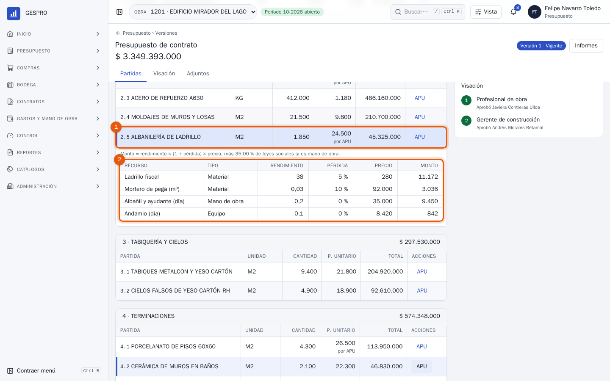
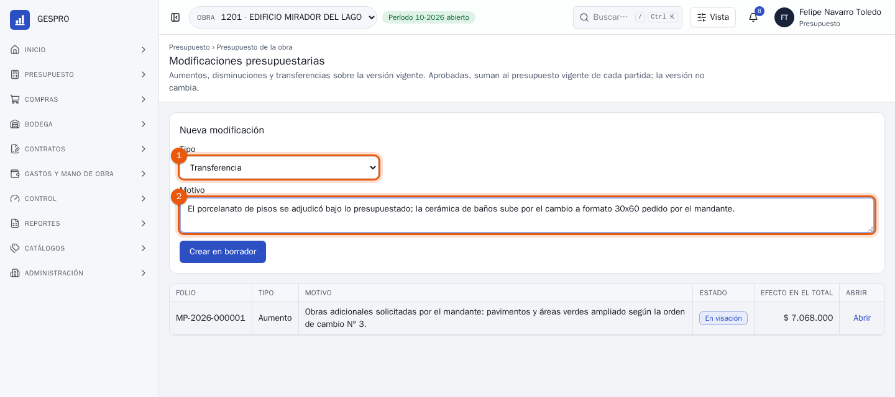
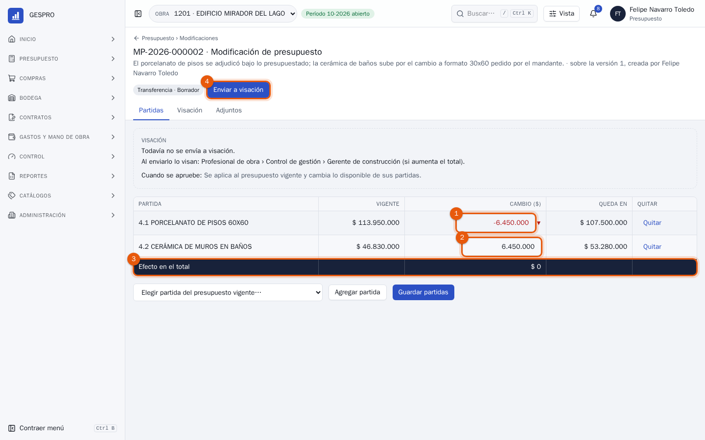
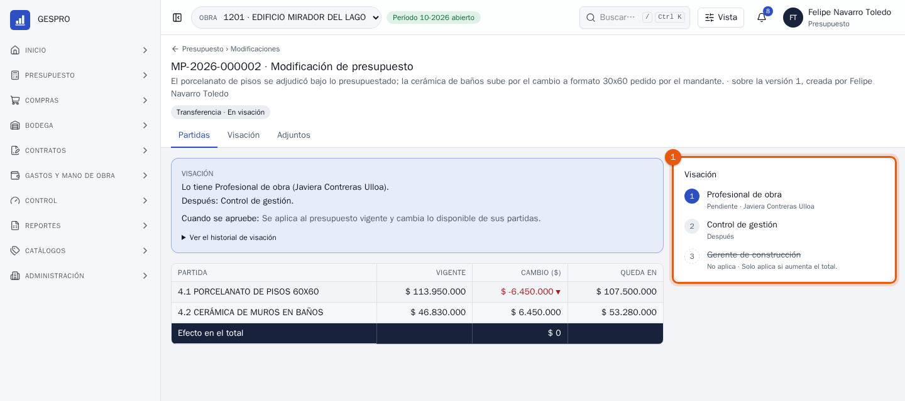
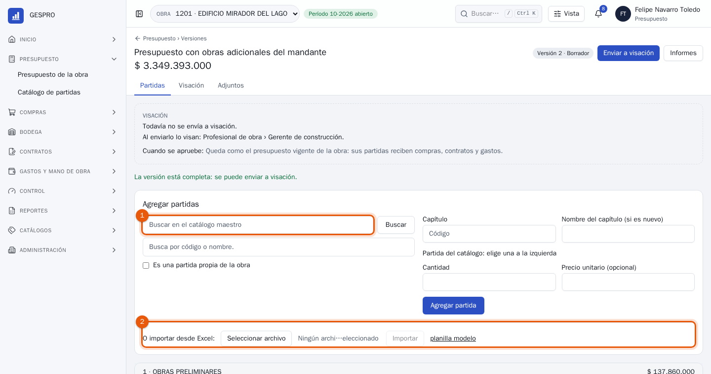
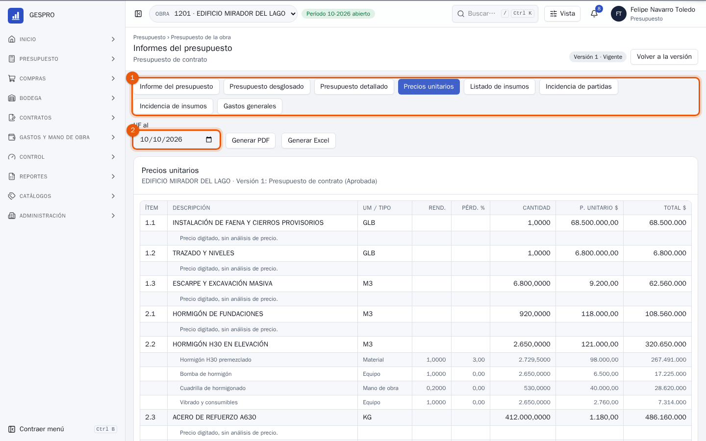
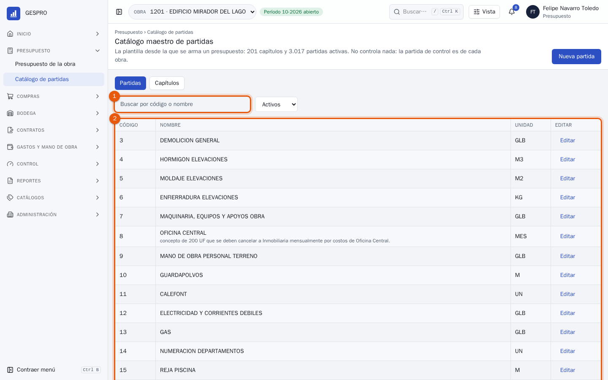

Manual de usuario
Presupuesto en GESPRO
Para quien arma y mantiene los presupuestos de obra: las partidas con su análisis de precio, las modificaciones que mueven monto de una partida a otra, las versiones nuevas cuando cambia el contrato y los informes que pide el mandante.
- Rol en GESPRO
- Presupuesto
- Sus pantallas
- Presupuesto de la obra · Modificaciones · Informes del presupuesto · Catálogo de partidas · Catálogos
- Ejemplos con
- Felipe Navarro · obra 1201 Edificio Mirador del Lago
1Lo que hace presupuesto
El presupuesto es la vara con que se mide la obra: cada compra, contrato o gasto se carga a una de sus partidas, y el Informe COPRE compara contra ella. Presupuesto lo arma, lo ajusta cuando hace falta y lo deja visado. Los pasos destacados son los de este manual.
- Armar la versiónPartidas, cantidades y precios.
- VisaciónProfesional de obra y gerente de construcción.
- Presupuesto vigenteLas partidas reciben compras, contratos y gastos.
- ModificacionesAumentos, disminuciones y transferencias.
- InformesPara el mandante y la gerencia.
- ControlEl Informe COPRE mide contra lo vigente.
| Quién | Qué hace con lo de presupuesto |
|---|---|
| Profesional de obra | Visa primero las versiones y las modificaciones. |
| Control de gestión | Visa las modificaciones y mide la obra contra el presupuesto vigente. |
| Gerente de construcción | Da la última firma de una versión, y de una modificación cuando aumenta el total. |
| Terreno, abastecimiento y administración | Cargan sus solicitudes, compras y contratos a las partidas del presupuesto vigente. |
2El presupuesto de la obra
En Presupuesto › Presupuesto de la obra están las tres cifras que importan y las versiones del presupuesto.

- Original, modificaciones y vigente. El original es la primera versión aprobada y no cambia; el vigente es el original más las modificaciones aprobadas. Las que están en visación se cuentan aparte, porque todavía no suman.
- Nueva versión: se arma sobre la vigente, cuando cambia el contrato entero.
- Las versiones, con su estado. Solo una es la vigente.
3Las partidas y su análisis de precio
La versión muestra las partidas por capítulo, con su unidad, cantidad, precio unitario y total. Cuando el precio sale de un análisis de precio unitario (APU), debajo dice por APU.

- La partida: 1.850 m² de albañilería a $ 24.500 el m², calculado por APU.
- El APU: cada recurso con su rendimiento por unidad de partida, su pérdida y su precio. El monto de cada uno es rendimiento × (1 + pérdida) × precio, y la mano de obra lleva además las leyes sociales de la versión. El precio unitario es la suma.
Para tener en cuentaEn una versión vigente el APU se lee, no se edita. Se edita en un borrador: al guardar el análisis, GESPRO recalcula el precio unitario y el total de la partida.
4Mover monto entre partidas
Un ajuste que no cambia el contrato entero se hace con una modificación presupuestaria, sobre la versión vigente. Aquí el porcelanato se adjudicó bajo lo presupuestado y la cerámica de baños necesita más.

- El tipo: aumento, disminución o transferencia.
- El motivo, que leerán quienes la visan. Crear en borrador la abre.

- Lo que baja: $ 6.450.000 del porcelanato. A la derecha, en cuánto queda la partida.
- Lo que sube: lo mismo, a la cerámica de baños.
- El efecto en el total: una transferencia suma cero.
- Enviar a visación, después de Guardar partidas. Si algo no cuadra, arriba aparece lo que falta antes de enviarla.

- La cadena: el profesional de obra y control de gestión. El gerente de construcción firma solo si la modificación aumenta el total; aquí aparece tachado. Aprobada, cambia lo disponible de las dos partidas; la versión sigue siendo la misma.
5Una versión nueva
Cuando cambia el contrato entero, se arma una versión nueva. Parte como copia en borrador de la vigente, y ahí se agrega, cambia o quita lo que haga falta.

- Agregar partidas desde el catálogo maestro, buscándolas por código o nombre, o como partida propia de la obra.
- Importar desde Excel: el presupuesto completo, en la planilla modelo. Sirve para una obra que se presupuestó fuera de GESPRO.
Enviar a visación la manda al profesional de obra y al gerente de construcción. Al aprobarse queda como vigente. Una versión nueva no puede dejar una partida por debajo de lo que ya se gastó y comprometió en ella, y no se envía mientras haya modificaciones en curso.
6Los informes
Informes, en la versión, abre los ocho informes del presupuesto, en pantalla, en PDF o en Excel.

- El informe: el resumen por capítulo, el presupuesto desglosado o detallado, los precios unitarios con su APU, el listado de insumos, la incidencia de partidas y de insumos, y los gastos generales.
- La UF del día con que se expresan los montos en UF. Generar PDF o Generar Excel lo prepara, y la campana avisa cuando está listo.
7El catálogo maestro
En Presupuesto › Catálogo de partidas está la plantilla desde la que se arman los presupuestos de todas las obras de la empresa: capítulos y partidas con su unidad.

- Buscar por código o nombre. Nueva partida agrega una; el filtro muestra también las inactivas.
- Las partidas del catálogo. Editarlas no cambia los presupuestos ya armados: la partida que se controla es la de cada obra.
En Catálogos están también los recursos, las unidades con sus conversiones, las familias y los centros de costo.
8Preguntas frecuentes
¿Modificación o versión nueva?
Una modificación ajusta algunas partidas y mantiene la versión: es lo habitual en el mes a mes. Una versión nueva rehace el presupuesto, por ejemplo cuando el mandante cambia el contrato.
La modificación dice que el presupuesto vigente cambió.
Se armó sobre una versión que ya no es la vigente. Recházala y crea una nueva sobre la versión actual.
¿Por qué no puedo bajar una partida a cero?
Porque ya tiene gasto o compromisos. Ni una versión nueva ni una modificación la dejan bajo lo gastado y comprometido.
El informe dice que no hay UF registrada.
No hay UF para ese día. Elige otra fecha en UF al, o el informe va solo en pesos.
¿Puedo aprobar mi propia modificación?
No. En GESPRO nadie aprueba lo que envió, y presupuesto no firma en las cadenas del presupuesto.